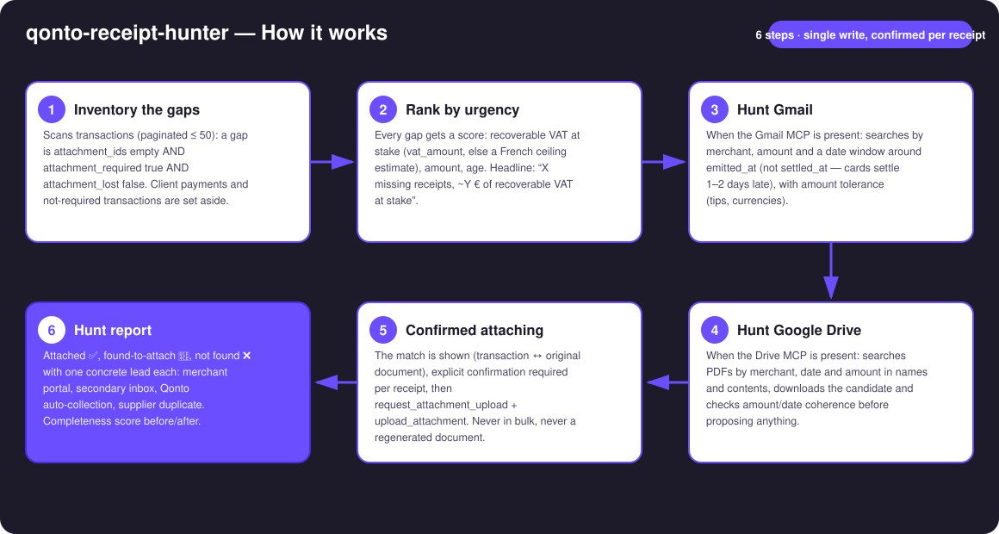
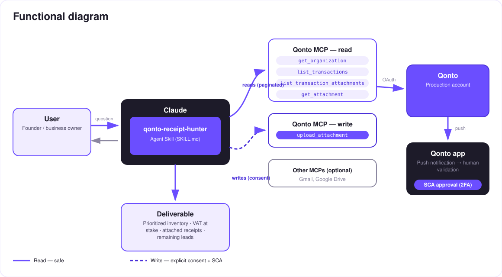

Zero missing receipts — the hunter that finds your receipts in Gmail & Drive and attaches them to your Qonto transactions.
Roughly one transaction in five is missing its receipt. Every one of them is recoverable VAT left on the table, a deduction at risk, and a question your accountant will ask. The skill turns the chore into a hunt:
Transactions missing a receipt, ranked by urgency: recoverable VAT at stake, amount, age — tagged 🔴🟠🟢.
Gmail (merchant + amount + dates around the purchase) and Google Drive — detected dynamically.
Match shown (transaction ↔ original document), one confirmation per receipt, upload verified — never in bulk.
Attached ✅, to attach 📎, not found ❌ with one lead each + completeness score before/after.
Would someone use this on a Monday morning? It's the end-of-month chore everyone postpones — now it runs itself.
| Prerequisite | Detail | Required |
|---|---|---|
| Qonto production account | Adapts to any organization — get_organization first, nothing hardcoded | ✅ |
| Country | Works for every Qonto country. The 20/120 VAT-ceiling estimate applies to France only; elsewhere only tagged vat_amount is used — rates are never guessed | ℹ️ detected |
| Qonto MCP connected | Official connector (claude.ai / Claude Desktop), OAuth login | ✅ |
| Gmail MCP | Powers the email hunt. Absent: the skill says so and still delivers the prioritized inventory + where to look | ⭕ recommended |
| Google Drive MCP | Powers the file hunt | ⭕ optional |
| Scope | Last 90 days by default — widen (quarter, fiscal year) on request | ⭕ |

emitted_at — card payments settle 1–2 days later (settled_at), which is exactly where other tools miss the receiptclean_counterparty_name and the raw labelattachment_required: false, client payments and attachment_lost excluded from the score · several plausible candidates → the skill asks · pagination ≤ 50 everywhere
Document integrity, the guardrail that matters most: the only write adds a document to a transaction — it never touches money — and requires explicit per-receipt confirmation. Above all: originals only (merchant PDFs, email attachments). A fabricated receipt has zero probative value and is a tax-audit liability — the skill will never produce one.
| Criterion | Signal | Effect |
|---|---|---|
| Recoverable VAT at stake | Tagged vat_amount; else (France) an amount × 20/120 ceiling, disclosed as an estimate | Main weight |
| Amount | Big debits first — that's where the lost deduction hurts | Strong |
| Age | The older the gap, the closer the accounting close and the harder the duplicate | Strong |
| Exclusions | attachment_required: false · client payments (side: credit) · attachment_lost | Out of the score |
| Source | Method | Condition |
|---|---|---|
| Gmail | Merchant (name variants) + amount + window around emitted_at, amount tolerance; target: the merchant's original PDF | Gmail MCP connected |
| Google Drive | Search by merchant/date/amount in names and contents, download + coherence check before proposing | Drive MCP connected |
| Not found? | One concrete lead per gap: merchant portal (invoices section), secondary or personal inbox, Qonto's native receipt auto-collection, supplier duplicate | Always |
| Output | Format | When |
|---|---|---|
| Conversation reply | Markdown tables (prioritized inventory, VAT at stake, hunt report) | Always — the baseline |
| Qonto attachments | Real attachments on the transactions, visible immediately in the app | On every confirmation |
| Completeness report | Before/after score + remaining leads; HTML version when the host renders files, tables otherwise | End of session |
The ≤ 3-minute demo attached to the PR walks through: the problem → the prioritized inventory (7 missing receipts, VAT at stake quantified) → the live Gmail hunt → 5 receipts found and attached, one click each → the final report with leads for the remaining 2. It runs live on a real production account.
| Idea | Effort | Note |
|---|---|---|
| Gmail draft emails asking suppliers for duplicates | Low | Drafts only — the user sends |
| Monthly ritual: completeness score tracked month over month (streak) | Low | Reuses the existing report |
| More mailboxes (Outlook/M365) detected dynamically | Medium | Same hunt logic, different MCP |
Duplicate-attachment cleanup (remove_transaction_attachment, behind confirmation) | Medium | The reverse cleanup, same guardrails |
| Fine-grained amount/VAT verification by reading the PDF (multi-line, currencies) | Medium | Strengthens the coherence check |
emitted_at with a disclosed amount tolerance